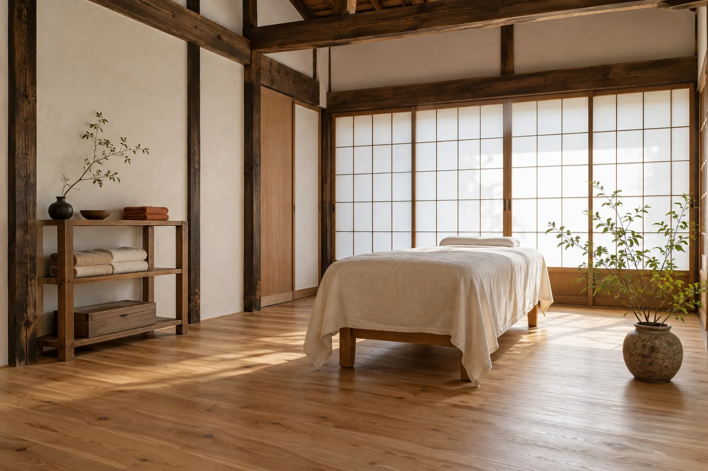
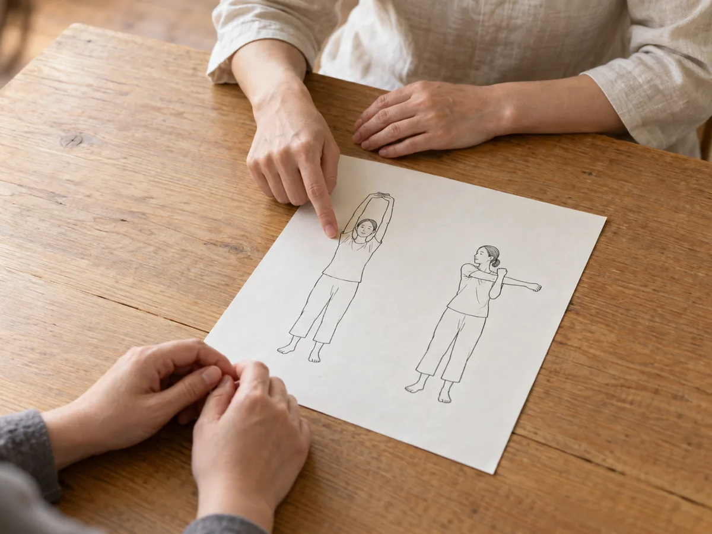
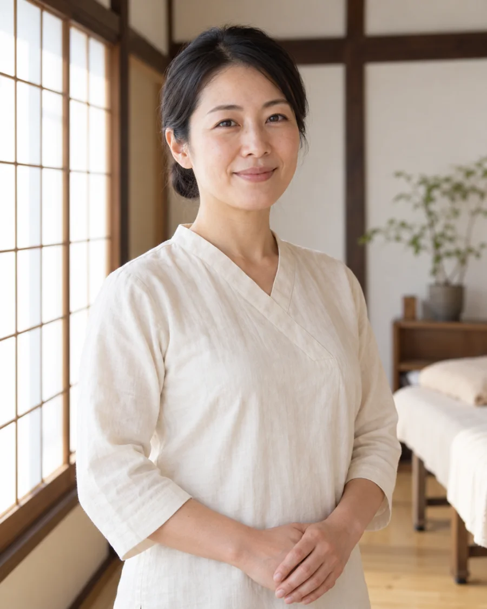
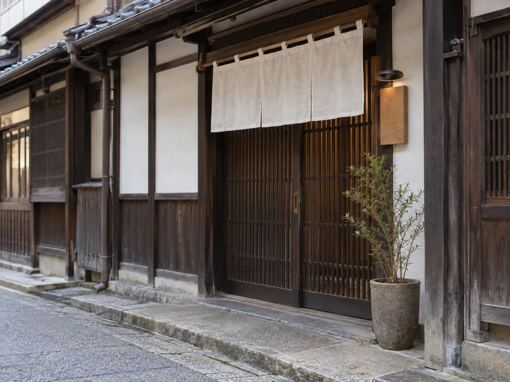

こんな方へ
次のような日が続いている方に、お越しいただきたいと考えています。
-
夕方になると、肩が重い。
画面に向かう時間が長く、夕方には肩のあたりが重く感じられる方へ。
-
長く座ると、腰がつらい。
座りっぱなしの日が続き、立ち上がるときに腰が気になる方へ。
-
どこに相談すればよいか、分からない。
整体が初めてで、何から話せばよいか迷う方も、どうぞ。
木の芽の3つの約束
-
1
はじめに20分、話を聞きます。
お仕事のこと、普段の姿勢、気になっていること。まずはお話をうかがい、そのうえで、その日にできることを一緒に考えます。急いで施術に入ることはありません。
-
2
最初から最後まで、同じ施術者が担当します。
受付から施術、体操のお伝えまで、院長の早瀬がひとりで担当します。毎回、前回のお話の続きからうかがうことができます。
-
3
強く押したり、音を鳴らしたりしません。
手のひらを使って、体にやさしく触れていきます。体をひねって音を鳴らすようなことはしません。心地よさには個人差がありますので、いつでもお声がけください。
当日の流れ
ご来院から終わりまで、合計60分です。
-
01
お話をうかがう
20分
お仕事や普段の姿勢、気になっていることを、ゆっくりうかがいます。
-
02
体の動きを確かめる
5分
立った状態や座った状態で、首・肩・腰の動かしやすさを一緒に確かめます。
-
03
手で施術する
30分
うつぶせや横向きになっていただき、手のひらを中心に、体にやさしく触れます。
-
04
家でできる体操をお伝えする
5分
ご自宅で無理なくできる動きを、紙に書いてお渡しします。

合計
60分
20分 + 5分 + 30分 + 5分 = 60分（カウンセリング込み）
最後にお渡しする紙には、その日お伝えした体操を書いています。ご自宅で、思い出すときにお使いください。
料金
- 初回 60分（カウンセリング込み）
- 4,400円（税込）
- 2回目以降 50分
- 6,600円（税込）
- 回数券の販売はしていません。必要だと感じたときに、その都度ご予約ください。
- お支払いは現金・各種カード・QR決済がご利用いただけます。
施術者

院長
早瀬 みどりはやせ みどり
はじめまして、早瀬です。体のことを話すのは、少し勇気がいるかもしれません。急がず、お話しできるところからで大丈夫です。できること、できないことは、正直にお伝えします。お会いできる日を、静かにお待ちしています。
- 2012–2022年
- 京都市内の整体院に10年勤務
- 2022年
- 町家を改装し、「整体院 木の芽」を開院
よくある質問
服装は、どのようなものがよいですか？
動きやすい服装でお越しください。貸出用の施術着もご用意していますので、お着替えいただくこともできます。
どのくらいの頻度で通えばよいですか？
回数や頻度をこちらから決めることはありません。ご自身の生活やお気持ちに合わせて、その都度ご予約ください。
痛くないですか？
強く押したり、体をひねって音を鳴らしたりはしません。手の圧は、ご希望に合わせて調整します。施術中に気になることがあれば、いつでもお伝えください。
医療機関にかかっている場合は？
通院中の方は、まず主治医にご相談ください。整体は医療行為ではありません。
キャンセルはできますか？
ご都合が合わなくなったときは、LINEまたはWeb予約フォームからお知らせください。前日の20時までにご連絡いただければ、キャンセル料はいただきません。それ以降のご連絡は、お早めにお知らせください。
アクセス・営業時間

- 住所
- 京都市中京区木の芽町 3-1
（架空の住所です） - 道順
- 地下鉄「烏丸御池」駅の出口から、細い通りに入って徒歩6分です。
格子戸の町家と、入口脇の小さな木の看板が目印です。 - 営業時間
- 10:00〜20:00（最終受付 19:00）
完全予約制です。 - 定休日
- 水曜・第3日曜
まずは一度、体の話を聞かせてください。
初回 60分 4,400円（税込）・完全予約制。
ご予約は、LINEまたはWeb予約フォームから承ります。
作例のため、ボタンは動きません。